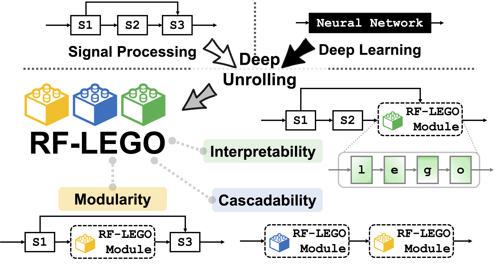
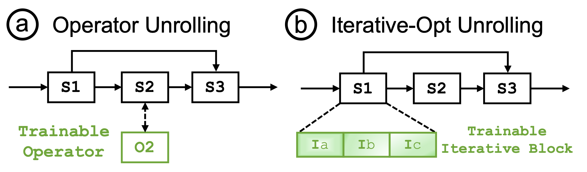
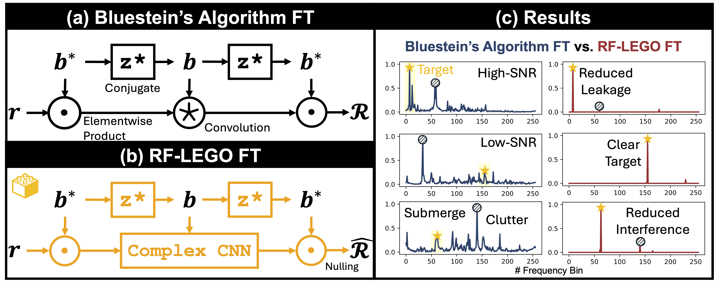
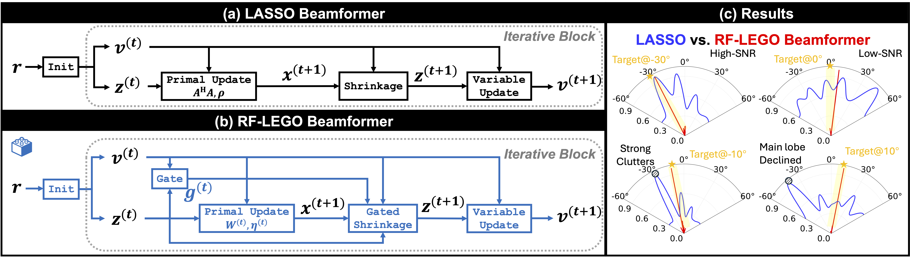
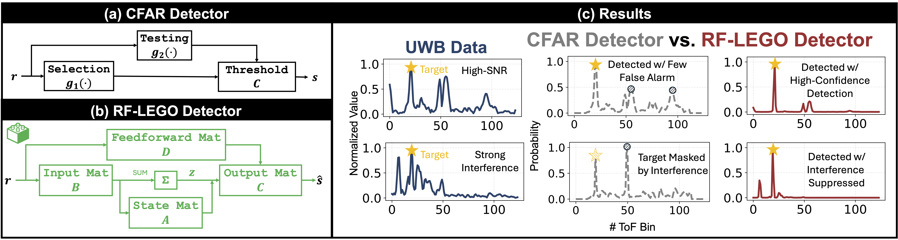

RF-LEGO
Modularized Signal Processing–Deep Learning Co-Design
for RF Sensing via Deep Unrolling

Abstract
Wireless sensing, traditionally relying on signal processing (SP) techniques, has recently shifted toward data-driven deep learning (DL) to achieve performance breakthroughs. However, existing deep wireless sensing models are typically end-to-end and task-specific, lacking reusability and interpretability.
We propose RF-LEGO, a modular co-design framework that transforms interpretable SP algorithms into trainable, physics-grounded DL modules through deep unrolling. By replacing hand-tuned parameters with learnable ones while preserving core processing structures and mathematical operators, RF-LEGO ensures modularity, cascadability, and structure-aligned interpretability. Specifically, we introduce three deep-unrolled modules for critical RF sensing tasks: frequency transform, spatial angle estimation, and signal detection.
Extensive experiments using real-world data for Wi-Fi, millimeter-wave, UWB, and 6G sensing demonstrate that RF-LEGO significantly outperforms existing SP and DL baselines, both standalone and when integrated into multiple downstream tasks. RF-LEGO pioneers a novel SP–DL co-design paradigm for wireless sensing via deep unrolling, shedding light on efficient and interpretable deep wireless sensing solutions.

The dilemma, and the way out#
Classical RF pipelines are interpretable but rigid. Deep models are adaptive but opaque — and almost never reused. RF-LEGO refuses the choice.
A decade of wireless sensing has been built on hand-tuned signal processing: an FFT here, a MUSIC spectrum there, a CFAR threshold at the end. Every block has a physical meaning, and every block has a constant that someone chose by hand — and has to choose again when the hardware, the room, or the SNR changes.
Deep wireless sensing swings the other way. CNNs, Transformers, and now LLMs learn the mapping end to end, but the result is one model for one task. When the task or environment shifts, the model is retrained rather than recomposed. Unlike vision or NLP, almost no deep wireless sensing model gets reused by the next paper.
Deep unrolling offers a third way. Take a classical iterative algorithm, turn each of its steps into a differentiable layer, and replace only its hand-tuned coefficients with learnable, physics-constrained parameters. The operator structure — and with it the physical meaning of every intermediate signal — survives training. RF-LEGO is the first framework to apply this modularly to RF sensing.
Modularity
Each module unrolls a classical algorithm and mirrors its input/output semantics, adding a minimal set of trainable parameters. Plug-and-play across pipelines, datasets and applications — no retraining required.
Cascadability
Modules snap together, or into existing models. FT → Detector for range and Doppler; Beamformer → Detector for angle. Benefits compound rather than cancel along the chain.
Interpretability
Every stage keeps a well-defined contract and a semantically meaningful output in a standard signal domain — so classical criteria like PSLR and PAPR still apply to a learned block.
Scope of the claim. RF-LEGO does not promise that every learned weight is human-readable. What it guarantees is structure-aligned interpretability: intra-block operator structure and inter-block pipeline structure remain precisely aligned with the classical SP diagram they were unrolled from.
A primer on deep unrolling#
Two design patterns cover most of what one can do to a classical block without breaking it.
Most deep learning models are purely data-driven, and their learned structures are hard to interpret: end-to-end networks learn task-specific mappings entirely through backpropagation over high-dimensional parameters whose individual roles are opaque. Classical signal processing is interpretable at both the pipeline and the block level, because it is derived from physical models and domain priors — but it suffers from parameter rigidity, since its performance hinges on expert-tuned hyperparameters that need recalibration whenever the environment changes.
Deep unrolling transforms signal processing techniques into structured neural architectures, combining the adaptability of deep learning with the interpretability and physics of classical methods. Broadly, it falls into two categories.

Operator unrolling
Keep the pipeline; swap one classical block for a drop-in trainable operator that mirrors its mathematics. Fixed kernels, filters and thresholds become a compact set of physics-constrained parameters, while complex-valued semantics and intermediate states stay exposed. The result is a plug-and-play block with strong domain alignment and easy composition with neighbouring stages.
Iterative-optimization unrolling
Keep the block; open its inner loop. Each solver iteration becomes a network layer with learnable step sizes, preconditioners and proximal or shrinkage maps — turning an algorithm into a structured, trainable stack that preserves structure-aligned interpretability.
Together these give a concise design vocabulary: either swap in a trainable operator that respects the classical interface, or unfold the operator's iterative routine into a stable, interpretable, data-driven network.
Deep unrolling has already reshaped sparse coding, Kalman filtering and image restoration. Its potential for the particular constraints of deep wireless sensing had not been explored: different SP operators impose distinct proximal structures and constraints; non-differentiable steps need smooth, bounded surrogates to keep backpropagation from collapsing; and true modularity demands preserving the classical input/output and complex-valued semantics so blocks stay plug-and-play and calibratable across platforms. RF-LEGO opens that direction.
Three modules#
Frequency transform, spatial angle estimation, and signal detection — the three operations that appear in nearly every RF sensing pipeline ever published.
RF-LEGO FT
Frequency transform · unrolled from Bluestein's algorithm
The problem
The FFT's basis is fixed and scene-independent. Sidelobe leakage from a strong reflector can bury a weak target entirely, and the Cooley–Tukey factorization offers no localized, structure-preserving place to learn. Preprocessing filters help marginally; Hilbert–Huang-style decompositions cost more and suffer mode mixing.
The unrolling
Bluestein's algorithm rewrites the DFT as chirp multiply → one convolution → chirp multiply. That single convolution is a clean insertion point. Keep the chirps; make only the convolution learnable, initialized from the chirp sequence itself.

Using the identity $nk=-\tfrac{(k-n)^2}{2}+\tfrac{n^2}{2}+\tfrac{k^2}{2}$, the transform factorizes as
which is algebraically equal to the DFT, retains complex-valued semantics, and isolates a single fixed-kernel convolution. Because DL toolchains implement cross-correlation rather than flipped-kernel convolution,
we exploit the equivalence between correlation with a filter and convolution with its flipped version — valid precisely because the filter is trainable. The operator is instantiated as a shallow complex-valued CNN sitting exactly at Bluestein's convolution site, with smooth activations for mild nonlinearity and SP-basis initialization for a stable start. An optional lightweight nulling head applies soft trainable shrinkage at the output, acting as a stabilizer rather than the primary source of improvement.
RF-LEGO Beamformer
Spatial angle estimation · unrolled LASSO with a gated ADMM solver
The problem
MUSIC needs the source count and a clean signal/noise subspace split; it is brittle under coherent multipath and low SNR. Worse for co-design, its eigenvalue decomposition has notoriously unstable gradients, which destabilizes training if unrolled naively. Plain ADMM with rigid coefficients over-shrinks true components and converges slowly.
The unrolling
Recast beamforming as sparse spectral estimation over an angle grid (LASSO) and unroll the ADMM solver. The steering model and the explicit angle spectrum are untouched; only step sizes, a diagonal preconditioner, the shrinkage level and a GRU-style gate become learnable. No eigendecomposition anywhere.

For a ULA of $M$ elements observing $K$ far-field sources, we solve on a discretized angle grid
and unroll each ADMM iteration into a trainable layer:
with $\boldsymbol{W}^{(t)}=\mathrm{diag}(\boldsymbol{w}^{(t)})$ a learnable diagonal preconditioner that keeps the linear solve cheap, and $\eta^{(t)}=\mathrm{softplus}(\tilde{\eta}^{(t)})>0$ enforcing stable steps. The gate acts as learned relaxation — momentum with a schedule the network discovers for itself.
RF-LEGO Detector
Signal detection · CFAR recast as a differentiable state space model
The problem
CFAR's core operations are not differentiable — order statistics, in particular, block backpropagation outright — so CFAR cannot simply be unrolled. Prior neural CFARs face a dilemma: over-simplify the noise model to stay differentiable, or drop in a black box that destroys the interpretability unrolling exists to preserve.
The unrolling
CFAR is adaptive thresholding driven by a temporally estimated noise level — which is exactly what a state space model does. We recast selection-and-testing as a discrete SSM: the latent state replaces the selection operator, the feedthrough term plays the testing operator, and the CFAR decision diagram is left intact.

Classical CFAR reads $\boldsymbol{s}_n=\boldsymbol{C}\,\boldsymbol{g}_1(\boldsymbol{r}_n)+\boldsymbol{g}_2(\boldsymbol{r}_n)$, with $\boldsymbol{g}_1$ a (possibly non-linear) selection operator and $\boldsymbol{g}_2$ the test. The unrolled model keeps that shape but learns the dynamics:
which is the trapezoidal discretization of a continuous-time system, so the block stays faithful to the underlying dynamics while $\boldsymbol{A},\boldsymbol{B},\boldsymbol{C},\boldsymbol{D}$ adapt to data:
The result circumvents CFAR's tedious guard/training-cell tuning, adds structured memory that tracks clutter and drift, and — crucially for deployment — retains explicit control of the operating point, the detection/false-alarm trade-off that practical systems are specified against.
Snapping them together
The three modules can be used separately or combined, like LEGO blocks: RF-LEGO FT followed by RF-LEGO Detector for breathing-rate estimation, or the Beamformer followed by the Detector for angle. Because each unrolled module preserves the interface of the classical technique it came from, they also drop straight into prior and emerging sensing pipelines. The paper evaluates all of this on real Wi-Fi, mmWave, UWB and 6G data, standalone and inside trajectory tracking, vital-sign monitoring and activity recognition — see the paper for the full results.
Trained on synthetic data only. Every module is trained on ~30k synthetic frames — noisy spectra with injected leakage for FT, random-source array snapshots for the Beamformer, superimposed Hann/Hamming peaks at 5–40 dB SNR for the Detector — and then evaluated zero-shot on real measurements. PyTorch, one RTX 4090, AdamW at 1×10⁻³, batch 512, dropout 0.2; cosine-similarity loss for FT and Beamformer, BCE for the Detector.
Citation#
@INPROCEEDINGS{luca2026mobicom_rflego,
author={Luca Jiang-Tao Yu and Chenshu Wu},
booktitle={ACM International Conference on Mobile Computing and Networking},
title={RF-LEGO: Modularized Signal Processing-Deep Learning Co-Design for RF Sensing via Deep Unrolling},
pages={},
month={Oct},
year={2026},
}